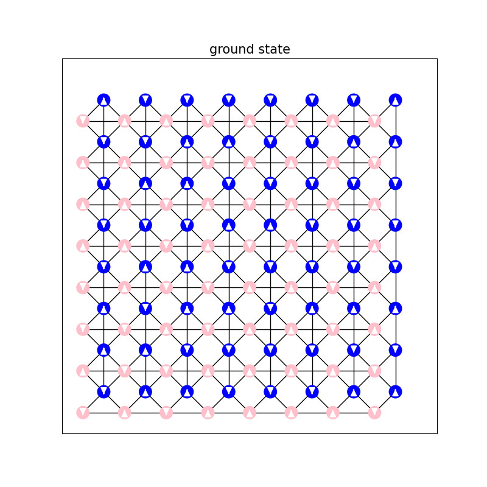

Computational_Physics_7
阻挫Ising模型
考虑方晶格上面的下列反铁磁Ising模型，每个元胞包含两个子格。

系统的哈密顿量为：
其中bonds代表所有有bond的邻居，例如对图中(x,y)处的元胞，A子格具有4个B邻居和2个A邻居。
现在考虑. 取周期边界条件，系统两个方向的尺寸相同，即.
问题 1：找出系统的基态构型规则。这个模型的基态简并吗？(1分)
基态构型规则：
根据题目所给哈密顿量：
该模型是一个二维方晶格上的反铁磁 Ising 模型，其中每个元胞包含两个子格（A 和 B），存在 A–A、A–B、B–B 的耦合。用“灰格子”指代图中的中间有十字交叉的格子：
则基态构型规则为：
每一个灰格子四个顶点（2A + 2B）上的自旋值之和为 0。
具体来说，由于自旋 ，要满足这个条件，只有以下几类组合可能：
- (+1, +1, -1, -1)
- (+1, -1, +1, -1)
- (+1, -1, -1, +1)
- 及其对称旋转
这表示灰格子中必须恰好包含两个 和两个 的自旋，从而满足局域能量最小化。
构型规则总结：
系统的基态要求每一个灰格子中的 4 个顶点（2 个 A 子格和 2 个 B 子格）自旋值之和为 0，即每个灰格子中有两个 和两个 的自旋。
基态是否简并？
由于每个灰格子允许多个满足条件的自旋配置（例如 、、 等），且整个系统包含 个灰格子，因此：
- 各个灰格子之间的构型选择存在一定自由度
- 整体系统可以在多个满足局部灰格子条件的全局配置中选择
这意味着系统具有大量等能量的基态。
结论：
该模型的基态是高度简并的，简并度随着系统尺寸指数增长。
问题 2：计算边长为 的模型的基态能量
根据题目和图像分析，我们知道每个“格子”包含 4 条边，分别是：
- A–B 边：每条 A 和 B 相邻的自旋是相反的，因此每条边的贡献是 。
- A–A 边：每条 A–A 边的自旋相同，因此每条边的贡献是 。
- B–B 边：每条 B–B 边的自旋相同，因此每条边的贡献是 。
因此，每个格子的总能量为：
此处补充说明：本人认为题目中的定义中的的存在是为了避免同一连接的重复计算，此处的做法已经规避了这一重复，因此不需要再乘。
系统总能量
系统有 个格子，因此总的基态能量为：
结论
基态下系统的总能量为：
问题三：零温度下的基态采样方法
问题描述
在零温度极限下，系统趋于基态。但由于本题的系统存在大量简并基态，单次模拟只能采样出其中一个。为了探索更多的基态构型，我们需要提出一种策略，使得在不同运行中，能够采样到不同的简并基态，从而更全面地理解系统的低温行为。
思路与方法
-
随机初始状态：我们每次运行 Monte Carlo 模拟时，都以完全随机的自旋配置作为初始状态。由于系统自旋态数量为 ，随机初始化可以带来充分的初态多样性。
-
零温极限模拟：
- 采用 Metropolis 更新策略；
- 当能量变化 时，一定接受更新；
- 当 时，有一定概率更新，是否更新取决于和随机数w的大小比较
- 实现等价于仅接受能量降低的过程，系统最终陷入一个局部甚至全局基态。
-
多次独立采样：我们通过多次重复上述过程，并保存最终的自旋构型，可以采样出多个可能的基态。
-
可视化验证：我们通过
visualize_spin()函数展示不同运行得到的自旋构型，并直观判断它们之间的差异。
代码见附录
问题四 具体呈现并验证
具体呈现3个不同的基态构型，验证它们都满足（1）中你发现的规则，验证能量是否是理论值。(1分)
由问题三中方法得到的三个基态展示如下：


不难看出，以上三个基态:
- 均满足问题一中发现的规律：
构型规则总结：
系统的基态要求每一个灰格子中的 4 个顶点（2 个 A 子格和 2 个 B 子格）自旋值之和为 0，即每个灰格子中有两个 和两个 的自旋。
- 计算以上三个构型的能量，发现当“灰格点”的数目为时，理论能量为,符合理论值。
问题五 计算自旋关联函数 C^{μν}(r)
在二维正方晶格上，我们对每一对 μ ∈ {A, B}, ν ∈ {A, B} 的子格子自旋，计算它们之间在相对位移 r 处的平均乘积，即关联函数：
为此，我们对晶格中的所有 R 点枚举，使用周期性边界条件处理 越界情况，最终将结果归一化。
我们分别绘制了四种组合的关联函数热力图 , , , 。如下图所示：
观察与分析
- 你能解释你发现的规律吗？(1分)